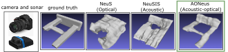
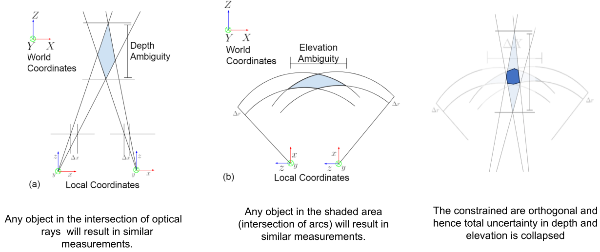
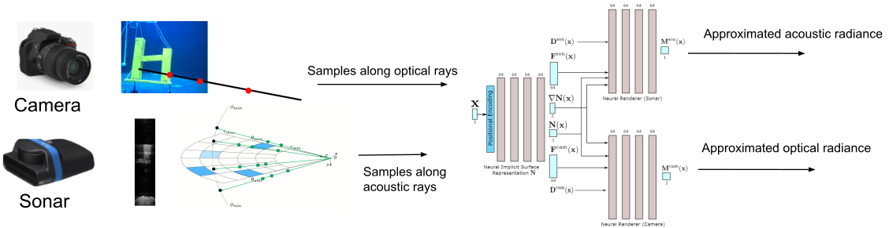
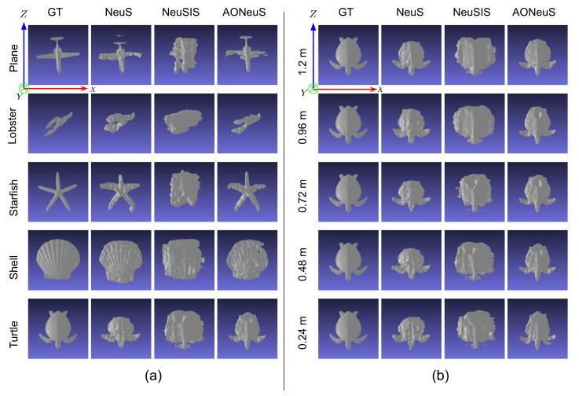

AONeuS: A Neural Rendering Framework for Acoustic-Optical Sensor Fusion
Anonymous authors

TL;DR:
Combining sonar and RGB measurements can improve 3D reconstruction in limited baseline settings.
Abstract
Underwater perception and 3D surface reconstruction are challenging problems with broad applications in construction, security, marine archaeology, and environmental monitoring. Treacherous operating conditions, fragile surroundings, and limited navigation control often dictate that submersibles restrict their range of motion and, thus, the baseline over which they can capture measurements. In the context of 3D scene reconstruction, it is well-known that smaller baselines make reconstruction more challenging. Our work develops a physics-based multimodal acoustic-optical neural surface reconstruction framework (AONeuS) capable of effectively integrating high-resolution RGB measurements with low-resolution depth-resolved imaging sonar measurements. By fusing these complementary modalities, our framework can reconstruct accurate high-resolution 3D surfaces from measurements captured over heavily-restricted baselines. Through extensive simulations and in-lab experiments, we demonstrate that AONeuS dramatically outperforms recent RGB-only and sonar-only inverse-differentiable-rendering—based surface reconstruction methods.
Background

Because optical sensors and acoustic sensors have complimentary ambiguities in the limited baseline setting, combining them eliminates the ambiguity.
Method

We fit a neural surface to optical and acoustic measurements by minimizing a photometric loss of volume rendered outputs against measurements.
A shared surface geometry SDF network \(\mathbf{N}\) is used in combination with rendering specific neural rendering modules. For each sampled point \(\mathbf{x}\) along an acoustic or optical ray, \(\mathbf{N}\) outputs its signed distance, its gradient as well as 2 features vectors \(\mathbf{F}^{\text{son}}\) and \(\mathbf{F}^{\text{cam}}\) all serving as input to their respective rendering networks.
Capture setup
On the left we show the simulation data setup and on the right we show the real capture setup.
This is a video animation of our real world data capture.
Results

In (a), we visualize the reconstructions in simulation for all objects at 0.4x baseline, or 0.48 meters. In (b), we visualize the reconstructions in simulation for the turtle across all baseline settings.
The red arrow pointing right denotes the \(X\), or translation axis, the green arrow pointing into the page denotes the \(Y\) axis, and the blue arrow pointing up denotes the \(Z\), or the depth axis.
We observe that NeuS (camera-only) incorrectly reconstructs the depth axis (\(Z\)-axis) whereas NeuSIS (sonar-only) can reconstruct only the depth-axis accurately. The proposed AONeus was able to recover underlying scene geometry along all the axes.
As the baseline diminishes, NeuS exhibits increasing amount of distortion along the depth direction as can seen at the intersection of the short piling and crossbar at the 0.72m and 0.96m baselines. NeuSIS similarly generates reconstructions with significant errors (for example, the long piling is poorly reconstructed with the \(14^\circ\) elevation). Conversely, AONeuS consistently produces faithful reconstructions across a range of baselines.